ELK实践分享(本篇博客是对一次分享的记录)
问题
日志散落在N台机器上,检索很痛苦
效果
搭建ELK
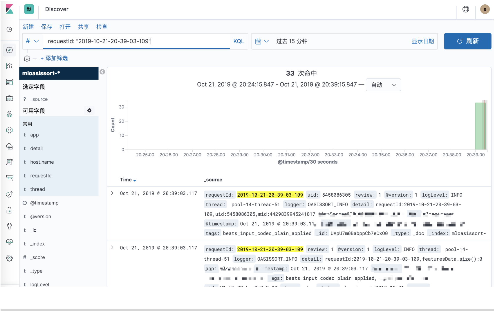
思考(我们的需求)
集中式日志收集系统
完备的日志接入能力
- 支持文件滚动
- 多行匹配
高可用存储
- 水平扩展
- 副本机制
- 快速检索能力
友好的交互界面
业界方案（Elastic Stack)
- Filebeat + Logstash
日志收集 - ElasticSearch
日志存储和检索 - Kibana
可视化操作界面
What is FileBeat
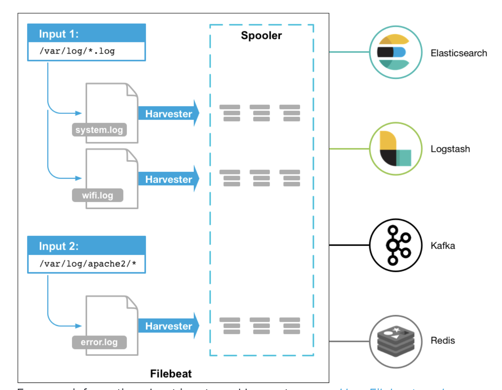
Config Example
1 | filebeat.inputs: |
Core Feature
rotation
multiplelines
https://www.elastic.co/guide/en/beats/filebeat/current/multiline-examples.html
at-least-once delivery
https://www.elastic.co/guide/en/beats/filebeat/current/how-filebeat-works.html#at-least-once-delivery
What is Logstash
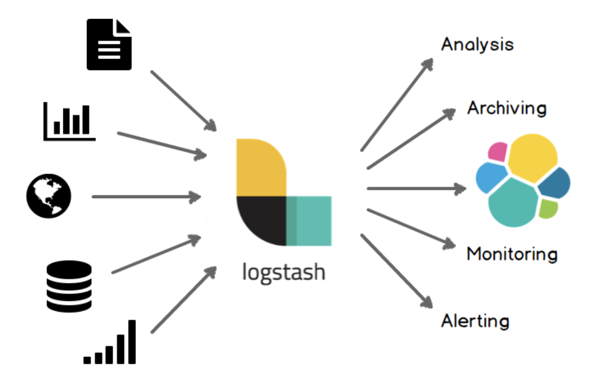
Why logstash
1 | 2019-10-24 07:54:23,086 INFO pool-14-thread-5 OASISSORT_INFO - requestId:2019-10-24-07-54-23-072,uid:xxxx,beforeReduce:275 |
将非结构化数据转换为结构化数据
1 | { |
Config Example
1 | input { |
ElasticSearch
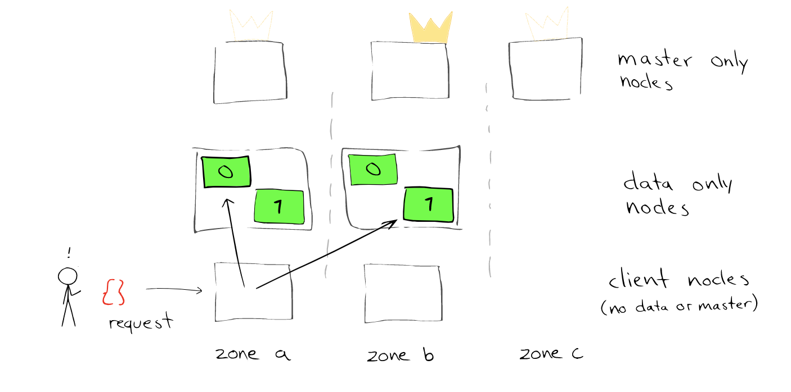
ElasticSearch基础概念
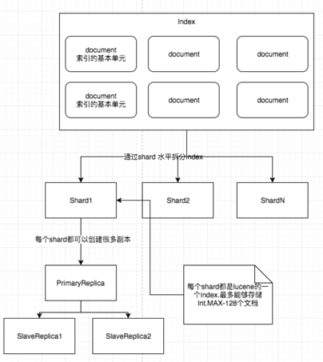
Index
An index is a collection of documents that have somewhat similar characteristics.
Document
A document is a basic unit of information that can be indexed.
Shard
An index can potentially store a large amount of data that can exceed the hardware limits of a single node. For example, a single index of a billion documents taking up 1TB of disk space may not fit on the disk of a single node or may be too slow to serve search requests from a single node alone.
To solve this problem, Elasticsearch provides the ability to subdivide your index into multiple pieces called shards.Replica
Replication is important for two primary reasons:It provides high availability in case a shard/node fails. For this reason, it is important to note that a replica shard is never allocated on the same node as the original/primary shard that it was copied from.
It allows you to scale out your search volume/throughput since searches can be executed on all replicas in parallel.
How does ElasticSearch work
索引建立
对输入分词，建立倒排索引
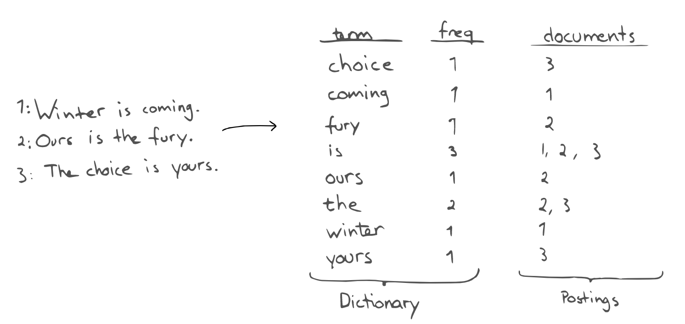查询
对用户输入分词
查询，算相关度打分排序refer
https://www.elastic.co/blog/found-elasticsearch-from-the-bottom-up/
落地实践
- 索引优化
- 时区调整
- 安全配置
索引优化
默认情况下,es会对文本字段进行分词，然后根据分好的词建立倒排索引. 这种情况会导致建立大量我们并不需要的索引，白白浪费磁盘空间且影响索引吞吐量.
1 | "properties": { |
取消分词
不行建立的索引的强制取消index
禁止doc_values
不需要聚合和排序的字段禁止doc_values
注意: 禁止doc_values之后不能同时禁用_source。
因为field的value默认是从_source获取的,除非额外设置每个字段的store属性为true
时区调整
原始日志中未携带时区信息,es默认以0时区进行解析，导致在kibana上展示的时间存在8小时的偏差.
1 | "message" => [ |
输入日志
1
2019-10-24 07:54:23,086 INFO pool-14-thread-5 OASISSORT_INFO - requestId:2019-10-24-07-54-23-072,uid:xxxx,beforeReduce:275
时区未处理之前
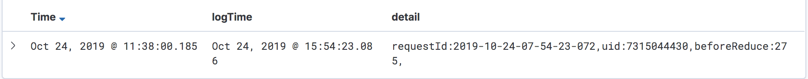
时区处理之后
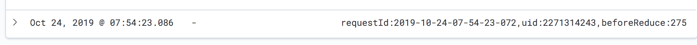
解决
通过logstash date filter,设置时区信息完成时间的转换
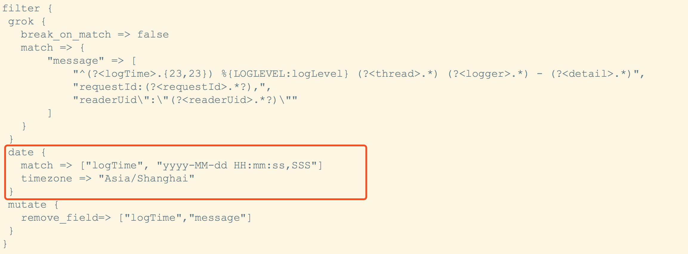
安全
启用基础认证的同时还需要加密链路，强绑定
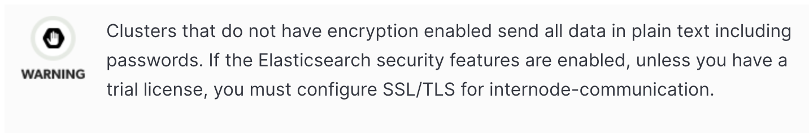
End
FAQ
如果有多个文件需要收集,每个文件的格式又不同要如何处理?
前提: 一个filebeat实例只能output到一个logstash端口.
解决:
使用多个filebeat 实例
filebeat为日志添加一个tag.每个日志的tag传输不通的值，在logstash端通过条件表达式针对性处理即可.
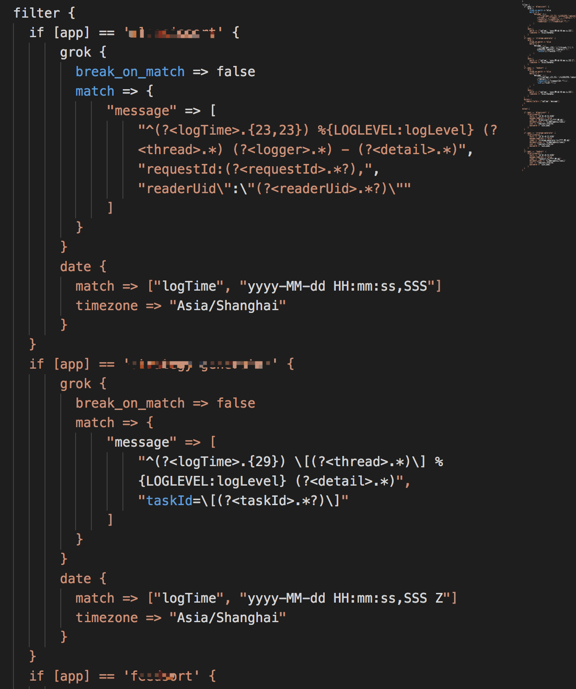
kibana反向代理的错误(20191107 更新)
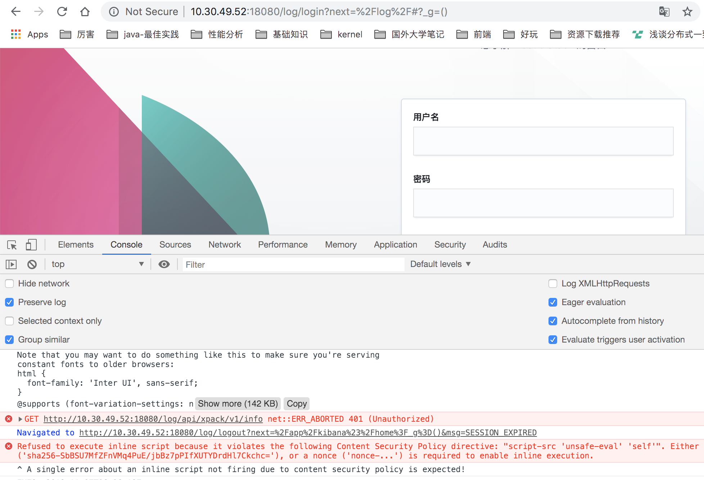
清除cookie信息后就正常了.看起来是之前存储的cookie信息导致的问题.